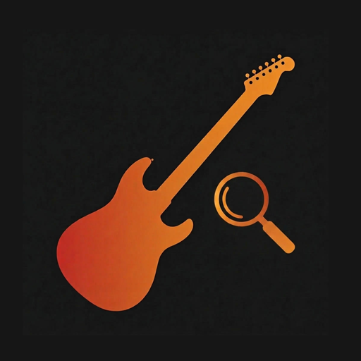

Cmajor
C · E · G · C · E
60 chords and 240 fingerings for the guitar in standard E–A–D–G–B–E tuning — with finger numbers, note names, and the barre shapes that slide up the neck. Free, no sign-up.
C · E · G · C · E
C · G · C · E♭ · G
C · E · B♭ · C · E
C · E · G · B · E
C · G · B♭ · E♭ · G
C♯ · G♯ · C♯ · F · G♯
C♯ · G♯ · C♯ · E · G♯
C♯ · G♯ · B · F · G♯
C♯ · G♯ · C · F · G♯
C♯ · G♯ · B · E · G♯
D · A · D · F♯
D · A · D · F
D · A · C · F♯
D · A · C♯ · F♯
D · A · C · F
D♯ · A♯ · D♯ · G
D♯ · A♯ · D♯ · F♯
D♯ · A♯ · C♯ · G
D♯ · A♯ · D · G
D♯ · A♯ · C♯ · F♯
E · B · E · G♯ · B · E
E · B · E · G · B · E
E · B · D · G♯ · B · E
E · B · D♯ · G♯ · B · E
E · B · D · G · B · E
F · C · F · A · C · F
F · C · F · A♭ · C · F
F · C · E♭ · A · C · F
F · A · C · E
F · C · E♭ · A♭ · C · F
F♯ · C♯ · F♯ · A♯ · C♯ · F♯
F♯ · C♯ · F♯ · A · C♯ · F♯
F♯ · C♯ · E · A♯ · C♯ · F♯
F♯ · C♯ · F · A♯ · C♯ · F♯
F♯ · C♯ · E · A · C♯ · F♯
G · B · D · G · B · G
G · D · G · B♭ · D · G
G · B · D · G · B · F
G · B · D · G · B · F♯
G · D · F · B♭ · D · G
G♯ · D♯ · G♯ · C · D♯ · G♯
G♯ · D♯ · G♯ · B · D♯ · G♯
G♯ · D♯ · F♯ · C · D♯ · G♯
G♯ · D♯ · G · C · D♯ · G♯
G♯ · D♯ · F♯ · B · D♯ · G♯
A · E · A · C♯ · E
A · E · A · C · E
A · E · G · C♯ · E
A · E · G♯ · C♯ · E
A · E · G · C · E
A♯ · F · A♯ · D · F
A♯ · F · A♯ · C♯ · F
A♯ · F · G♯ · D · F
A♯ · F · A · D · F
A♯ · F · G♯ · C♯ · F
B · F♯ · B · D♯ · F♯
B · F♯ · B · D · F♯
B · D♯ · A · B · F♯
B · F♯ · A♯ · D♯ · F♯
B · F♯ · A · D · F♯
No chord matches that. Try “Am” or “G7”.

This page covers the five everyday chord types. The app adds 20 more — sus2, sus4, diminished, augmented, major 6, minor 6, dominant 9, major 9, minor 9, add 9, minor add 9, six nine, dominant 11, major 11, minor 11, half-diminished 7, dominant 13, major 13, minor 13, diminished 7 — plus triads and inversions across string sets, audio playback of every shape, chords by key, and practice progressions to play along with.
Get ChordSeekAndroid. Free to install.
Standard guitar tuning is E–A–D–G–B–E, from the thickest string to the thinnest. The two E strings are two octaves apart, and every pair of neighboring strings is a fourth apart except G to B, which is a major third.
Vertical lines are the six strings, low E on the left and high E on the right. Horizontal lines are frets. A numbered dot is a finger (1 is the index finger), a circle above the grid is an open string, and × means that string is not played. A number like “5fr” on the left tells you the grid starts at the fifth fret instead of the nut.
A barre chord uses one finger, usually the index, laid across several strings at the same fret, so the shape has no open strings and can slide up the neck to any root. In these diagrams the barre is drawn as a bar across the strings it covers.
Yes. The diagrams on this page are generated directly from ChordSeek, using the same voicing engine, so what you see here is exactly what the app shows.